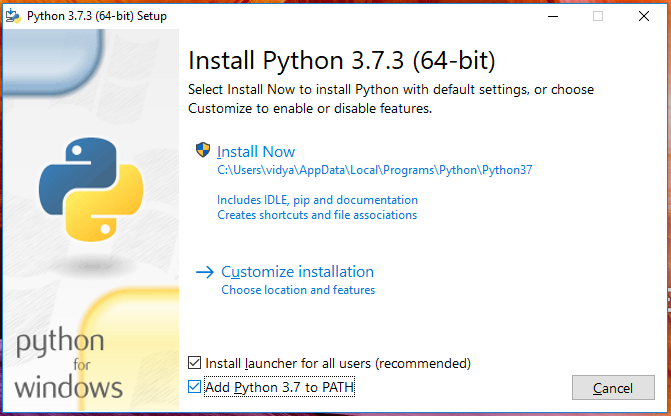
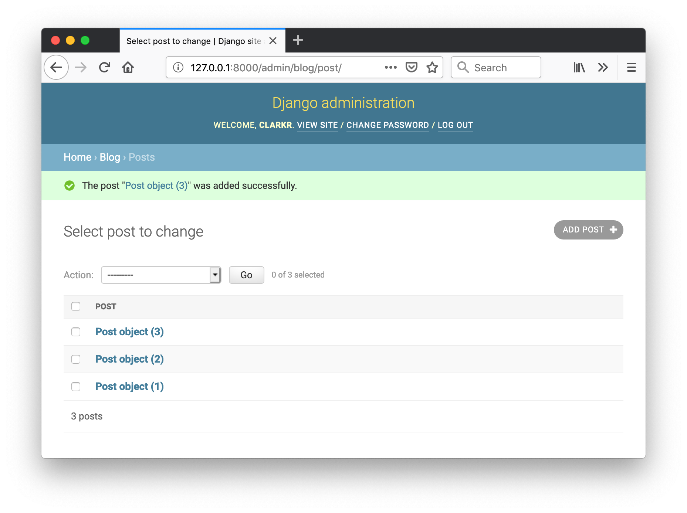

Install Python
Sections of this workshop were taken from the excellent Django Girls Tutorial, a more comprehensive tutorial that we encourage you to try in your own time.
In this workshop we will be using Python 3.6 or later and the PyCharm editor. If you already have Python 3.6 or later installed, jump to the PyCharm installation section.
Install Python: Windows
- Go to https://www.python.org/downloads/windows/
- Click on the Latest Python 3 Release - Python x.x.x link
- Scroll down to the Files section
- Download the Windows x86-64 executable installer
- Execute the installer and follow the promps. When you get to the Setup screen make sure you tick the Add Python 3.7 to PATH checkbox.

- To check if the installation was successful, launch a terminal (hit Command + R,
type in
cmdand hit Enter) and then enter the following command into your terminal:
python --version
This should output Python 3.7.3
Install Python: macOS
Check if you already have Python 3 installed by launching a terminal (hit Command + Space,
type in terminal and hit Enter) and then entering the following command into your terminal:
python3 --version
If the command outputs Python 3.6 or later, continue to the PyCharm installation section.
If you don't have Python installed, or if you want a newer version, follow the instructions at https://brew.sh/ to install the Homebrew package manager and then run:
brew install python3
Install Python: Linux
It is very likely that you already have Python installed out of the box. To check if you have it installed (and which version it is), open a console and type the following command:
python3 --version
If the command outputs Python 3.6 or later, continue to the PyCharm installation section. Otherwise install Python with your operating system's package manager:
Debian or Ubuntu
Open a terminal and run:
sudo apt-get update
sudo apt-get install python3 python3-pip
Fedora
Open a terminal and run:
sudo dnf install python3
CentOS
sudo yum install epel-release
sudo yum install python36 python36-pip
Installing PyCharm
To install PyCharm visit https://www.jetbrains.com/pycharm/ and click Download Now. The Community edition is free and has all the features you will need for this workshop.
Creating a New Django Project
Open PyCharm and start a new project by clicking Create New Project from the welcome screen or New Project... from the File menu.
In the Location box, replace untitled with mysite. Under Project Interpreter make sure
Virtualenv is selected.
If you have PyCharm Professional Edition you will see a Django option when creating a new project. We won't use it during this workshop but you may wish to try it on your own as it simplifies the setup of Django projects.
In the bottom of the window, open the Terminal pane. Enter the following command to install Django:
pip install django
Once pip has finished installing Django, create a new Django project by executing:
django-admin startproject main .
In the Project pane on the left you will see a folder called main and a file called
manage.py. The manage.py is used to execute Django management commands like creating admin users
and running database migrations.
Next we will create what is known as a Django app. In the Django context, an app is a component of a website site. Apps are used to provide structure to a project and to group files into re-usable parts.
Create an app called blog by running the following command:
python manage.py startapp blog
You will now see a folder called blog. Inside the blog folder Django has created some files to
scaffold your app. These are mostly empty now but we will add some content to them shortly. The
following table summaries the intention behind each file:
| File | Purpose |
|---|---|
views.py | functions and classes that handle requests made to your website |
models.py | classes for interacting with your database |
admin.py | classes for configuring the Django admin interface |
apps.py | used to configure the app |
tests.py | a place to write automated tests for your app |
To install your blog app into your Django project, open main/settings.py and at the end of the
INSTALLED_APPS list add 'blog'. It should look like:
INSTALLED_APPS = [
'django.contrib.admin',
'django.contrib.auth',
'django.contrib.contenttypes',
'django.contrib.sessions',
'django.contrib.messages',
'django.contrib.staticfiles',
'blog',
]
You can now run your site by executing:
python manage.py runserver
Go to http://127.0.0.1:8000/ in web browser to see your site.
The IP address
127.0.0.1refers to your computer.8000is an arbitrary port chosen by Django. If you wanted to run multiple Django projects on the same computer at the same time you would configure them to listen on different ports.
Challenges
-
Open a second terminal by clicking the + next to the Local tab in the terminal pane at the bottom of PyCharm. In this new terminal, run the following command to see some of the other django management commands that are available:
python manage.py helpYou can get more information about a command with
python manage.py help COMMANDFor example:
python manage.py help runserver
Views, Templates and URLs
We will now create a page to display the posts made to our blog. In Django this requires creating a function called a view function that receives a request from the web browser and returns a response that the browser will display to the user.
To create the view function, open blog/views.py and add the following:
from django.http import HttpResponse
def posts(request):
return HttpResponse('It works!')
We also need to configure which url will execute this view function. Open main/urls.py and
import our views module at the top of the file below the existing import:
from blog import views
Add your posts view to the urlpatterns:
urlpatterns = [
path('admin/', admin.site.urls),
path('', views.posts),
]
The first argument to
pathis an empty string because we want the blog posts to appear on the home page of blog. If you wanted the url for your blog to behttp://127.0.0.1:8000/myblog/then you would write:path('myblog/', views.posts).
Visit http://127.0.0.1:8000/ in your browser and you should see the text from the view function.
Instead of returning plain text, we would like our view function to return HTML so we can use display headings, links, images etc. To do this we create a Django template file.
Right-click on the blog folder and select New / Directory. Name the folder templates.
Right-click on templates and select New / HTML File. Name the file posts.html.
PyCharm helpfully adds some starting HTML in the new file. In the <title> tag enter My Blog and
hit Enter. In the <body> tags enter:
<h1>Welcome to My Blog!</h1>
Your full HTML should look like:
<!DOCTYPE html>
<html lang="en">
<head>
<meta charset="UTF-8">
<title>My Blog</title>
</head>
<body>
<h1>Welcome to My Blog!</h1>
</body>
</html>
Back in blog/views.py change the posts function to:
from django.shortcuts import render
def posts(request):
return render(request, "posts.html")
The reason we call posts.html a template is because as well as regular HTML, it can contain
special placeholder tags that Django can use to dynamically substitute in data each time a user
requests the page. To demonstrate this, change the heading in posts.html to:
<h1>Welcome to {{ name }}'s Blog!</h1>
Then make your posts view function provide your name to the template:
def posts(request):
return render(request, "posts.html", {"name": "Alice"})
Refresh the page in your web browser and your name should be substituted into the heading. We will use this same technique to pass blog posts into the template to be rendered.
Challenges
- Django has a large number of
filters
that transform data inside templates. Try changing
{{ name }}to{{ name | upper }}to one such filter in action. - What happens if you forget to supply the data to the template? Make it obvious when data is
missing by adding
'string_if_invalid': '<MISSING>',to theOPTIONSdictionary underTEMPLATEinmain/settings.py.
Models & Django Admin
We would like users to be able to create new blog posts through our site. These posts will need to be saved to a database. Django has built-in support for interacting with SQL databases through an Object-Relational-Mapping or ORM. In this model, rows in the database table are represented by Python objects called models. Let's create a model for our blog posts.
Open blog/models.py and add the following:
class Post(models.Model):
title = models.CharField(max_length=100)
body = models.TextField()
public = models.BooleanField(default=True)
created = models.DateTimeField(auto_now_add=True)
Django will automatically create and update the database table schema to match our model. It does this through database migrations which are files containing the SQL commands needed to configure the database.
To generate and apply migrations to create our Post table run the following command in the terminal.
If your terminal is blocked by the python manage.py runserver command you can open a new terminal
with the + button.
python manage.py makemigrations
python manage.py migrate
By default, Django uses SQLite as the database. You should see a db.sqlite3 file; this is
where SQLite will store our data.
Django automatically creates an admin interface that we can use to interact with our database.
In order to login we need to create a super-user account. Hop back to the terminal and run:
python manage.py createsuperuser
Set the username and password to whatever you would like. You can leave email address blank.
You can now use that username and password to log in to the admin interface. To access the admin
interface, go to http://127.0.0.1:8000/admin/.
Once you are logged in you will see links to Groups and Users but not our Posts. This is because we
haven't registered our Post model with the admin app. To do that open blog/admin.py and add the
following:
from .models import Post
admin.site.register(Post)
If you refresh the admin interface in your browser you should now see a row for managing Posts. Click the Add link and create a few Posts. Once you are done you should see several posts listed as in the screenshot below. In the next stage we will render them on our website.

Challenges
-
The admin interface can be highly customised. For example, we can make the table listing our posts more informative by displaying the title of the posts instead of "Post object". To do this replace
admin.site.register(Post)line inblog/admin.pywith:@admin.register(Post) class PostAdmin(admin.ModelAdmin): list_display = ['title', 'public', 'created']Reload http://127.0.0.1:8000/admin/blog/post/ to see the effect.
Querying & Displaying Models
Now we have some blog posts in our database we can update our view and template to display them.
Open blog/views.py and import our Post model at the top of the file:
from .models import Post
To load our posts from the database we execute a query on the Post.objects attribute. We want all
posts so we use Post.objects.all(). We then want to pass the posts into our template so we update
the dictionary passed into the render function:
def posts(request):
posts = Post.objects.all()
return render(request, "posts.html", {"name": "Alice", "posts": posts})
Inside blog/templates/posts.html, we wish to loop over all our posts and display the title and the
body of the post. We can do this in a Django template using the {% for ... %} template tag which
is terminated with {% endfor %}:
<body>
<h1>Welcome to {{ name }}'s Blog!</h1>
{% for post in posts %}
<h2>{{ post.title }}</h2>
<p>{{ post.body }}</p>
{% endfor %}
</body>
For each post in our database, this for loop will generate a heading tag containing the post title
and a paragraph tag (<p>) containing the body of the post. Save this and go back to
your homepage and you should see the posts that you entered in the admin
interface.
Challenges
-
We are currently showing all posts, including those where
publicis set to false in the database. We can get only posts wherepublicis true with:Post.objects.filter(public=True)Update the view function so only public posts are displayed on your homepage. Use the admin interface to make some posts private and confirm they are no longer visible.
-
If the body of a post contains multiple lines, the line breaks will not be visible on our homepage because HTML is whitespace insensitive. Fix this by ensuring line break tags are inserted into our HTML by applying the
linebreaksfilter to ourpost.body:{{ post.body | linebreaks }} -
In your browser, right-click on the page and choose View Page Source to see the actual HTML generated by the template.
Forms
Now that we can view our blog posts, it would be nice to be able to create them through our website.
To enable this we will create a new page which will use a ModelForm to generate a HTML form that users
can fill out to create a new post.
Let's first create the template. Right-click on blog/templates and select New, HTML File.
Call the file new_post.html. Make the title New Post and add a heading of <h1>New Post</h1>.
Your HTML should look like:
<!DOCTYPE html>
<html lang="en">
<head>
<meta charset="UTF-8">
<title>New Post</title>
</head>
<body>
<h1>New Post</h1>
</body>
</html>
Create a new view function in blog/views.py which renders our template:
def new_post(request):
return render(request, "new_post.html")
Next we need to create a url for this page. Open main/urls.py and add a path for the new page to
urlpatterns:
urlpatterns = [
path('admin/', admin.site.urls),
path('', views.posts),
path('new/', views.new_post),
]
We would like to be able to get to this page from the homepage so open blog/template/posts.html
and below the heading add a <a> tag:
<body>
<h1>Welcome to {{ name }}'s Blog!</h1>
<a href="/new/">Create a new post</a>
<!-- the rest of the body is unchanged -->
Test that everything works by refreshing your home page and following the link. You should see your
New Post heading.
We will create a class to represent our form in blog/views.py. Open that file and at the top
import the ModelForm base class:
from django.forms import ModelForm
At the bottom of the file create a form class for our Post model by subclassing ModelForm and
linking it to our model using the Meta inner-class:
class PostForm(ModelForm):
class Meta:
model = Post
fields = ["title", "body", "public"]
The fields attribute determines which fields on our model can be set using this form.
To render our form in the template we need to create a new instance in our new_post view function
and pass it into our template:
def new_post(request):
form = PostForm()
return render(request, "new_post.html", {"form": form})
Then in blog/templates/new_post.html we render the form with form.to_p. This must go inside a
<form> tag with a CSRF token which is used to fix a security vulnerability:
<body>
<h1>New Post</h1>
<form method="POST">
{% csrf_token %}
{{ form.as_p }}
<button>Submit</button>
</form>
</body>
Refresh your New Post page and you should see the form. You can complete it and click Submit but currently it wont save because we haven't configured our view function to handle submissions.
Since the browser will use the /new/ url for both fetching the HTML and for submitting the
form, both types of requests will be handled by our new_post view function. We can distinguish
which is which by looking at the HTTP request method. Requests for the HTML will have method GET
whereas submissions of the form will have method POST.
Configure your view function to use the PostForm class to save data from POST requests:
def new_post(request):
if request.method == "POST":
form = PostForm(request.POST)
form.save()
return redirect("/")
form = PostForm()
return render(request, "new_post.html", {"form": form})
After the form is saved we redirect users back to the home page. You will need to import the
redirect function at the top of blog/views.py:
from django.shortcuts import render, redirect
Once you have made that change, try creating a new post through your site and confirm it is displayed on the home page.
Challenges
-
Blogs typically display the most recent posts at the top of the page. Make yours do that by adding
.order_by("-created")to the model query in thepostsfunction inblog/views.py:def posts(request): posts = Post.objects.all().order_by("-created") return render(request, "posts.html", {"name": "Alice", "posts": posts})
What's Next
We now have a blog which allows us to create and view posts. We have also learned how to manage our posts through the Django Admin interface. Functionality that would be nice to add would be:
- Deleting posts
- Updating posts
- Styling your site using CSS
We encourage you to try doing these on your own. If you want to go even further, we highly recommend then Django Girls Tutorial which covers many other important topics including using source control, publishing your code to GitHub and deploying your code on the web.